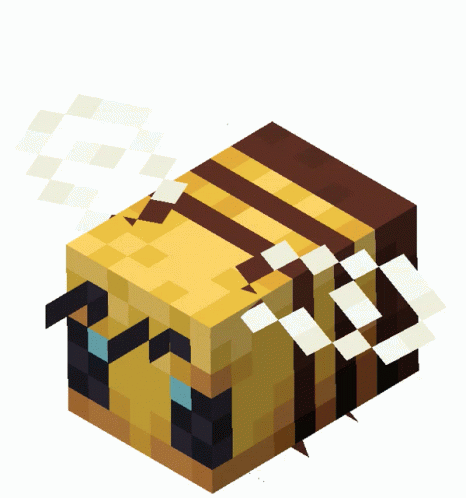

Белые медведи могут быть пассивными, нейтральными или враждебными в зависимости от ситуации. Белые медвежата всегда пассивны. Взрослые особи нейтральны, но нападают на игрока, если тот атакует их напрямую, либо если игрок подходит слишком близко к находящемуся рядом белому медвежонку (в Java Edition агрессии можно избежать, если убить медведя с одного удара). Если атаковать белого медвежонка, все взрослые медведи в радиусе 41×21×41 блоков станут враждебными к обидчику (в Java Edition этого не произойдёт при убийстве с одного удара). Это правило работает на любой сложности, однако на «Мирной» сложности их атаки наносят игрокам нулевой урон. В Java Edition нападение на взрослого медведя, который находится в радиусе 16×8×16 блоков от белого медвежонка, также провоцирует других взрослых медведей в радиусе 21×21×21 блок от атакованной особи. Взрослые белые медведи также нападают на лисиц. Во время атаки белый медведь встаёт на задние лапы и бьёт цель передними. Скорость их плавания равна скорости игрока, поэтому от них крайне трудно оторваться в воде. Белые медведи не получают урона от замерзания в рыхлом снегу.
волк
Волки могут быть в трёх разных обличиях в зависимости от того, как игрок взаимодействует с ними: дикий (неприручённый), враждебный, и приручённый. Дикие волки имеют белый мех, опущенный хвост, а их глаза состоят из двух белых пикселей и двух чёрных зрачков. Они являются нейтральными к игроку и спаунятся группами по четыре волка. Дикие волки будут наклонять голову в сторону, чтобы сообщить о своей заинтересованности в кости или мясе, которые держит рядом стоящий игрок. Дикие волки также станут враждебными по отношению к игроку, если он нападает на них. Также без какой-либо на то причины любые ламы будут атаковать любого дикого волка, что их провоцирует не убегать, а нападать.
Враждебные волки отличаются постоянным рычанием и внешним видом. Их хвост становится прямым, глаза — красными, а мех становится более контрастным, открывая тёмные пятна и ощетинившиеся волосы. Линия рта поднимается при рычании. Они координируют атаки на игроков, которые ранили дикого волка в группе, и не вернутся из этого состояния до тех пор, пока игрок не возродится после смерти. Прирученные волки не могут стать злыми на своих хозяев, но они могут обозлиться на других игроков и мобов. Враждебные волки нападают все и на всех игроков в радиусе видимости.
Приручённые волки отличаются от диких и враждебных волков глазами: они выглядят менее агрессивно (над чёрным зрачком присутствует ещё один белый пиксель глаза). Они также имеют красный ошейник, являющийся просто текстурой
дельфин
Дельфины обычно плавают большими группами, периодически выпрыгивая из воды, чтобы подышать воздухом. Кроме того они способны перепрыгивать в другие водоёмы. Также они преследуют игрока, плывущего в лодке.
Игроки, плавающие в пределах 9 блоков от дельфинов, получают эффект Грация дельфина () на 5 секунд. Игрок с наложенным эффектом Невидимость () не получает эффект, если он уже был дан до того, как игрок стал невидим. В Bedrock Edition игрок просто получает повышение скорости без статуса эффекта.
Дельфинов привлекают упавшие предметы, находящиеся внутри ближайших блоков воды, они толкают их вниз и преследуют.[только для Java Edition] Если дельфину не удаётся найти путь к упавшему предмету, он может остаться под водой, пока не утонет. Если дельфин находится внутри или на затопленном блоке, нижней части плиты или на сундуке с блоком воздуха сверху, то дельфин не утонет.
железный голем
Железный голем в мирное время медленно прогуливается по деревне. Но, будучи спровоцированным, с большой скоростью начинает двигаться к своей цели. Настигнув цель, он начнёт её атаковать, яростно размахивая руками, при этом подбрасывая её в воздух и нанося большой ущерб, так как жертва будет получать урон ещё и от падения. Големы, как и другие мобы, получают урон от лавы, огня и яда, что делает возможным постройку ловушек для них. Однако, они не получают урон от падения с большой высоты и не могут утонуть, хоть и не умеют плавать.
При потере здоровья железный голем начинает трескаться. Есть четыре этапа, от целого до полностью растрескавшегося, прежде чем голем погибнет. Его здоровье можно восстановить, используя железные слитки. Один железный слиток восстанавливает 25 ("❤️" × 12.5). При каждом потрескивании и восстановлении проигрываются звуки. Требуется 4 железных слитка, чтобы восстановить железного голема от 1 единицы здоровья до полного. Трещины на железном големе с эффектом «Свечение» просвечиваются. Также, если на территории деревни не осталось никого из жителей, голем покидает деревню.
Железный голем не деспаунится при переключении режима сложности на Мирный. Если голем появился непосредственно при генерации деревни, то после его смерти сразу же спаунится новый железный голем.
Символом дружественных отношений служит мак в руке голема, который он может дарить жителям, их детям и медным големам.
игобрюх
Иглобрюхи надуваются, когда к ним приближаются почти все враждебные мобы, игрок или стойка для брони.[2]
Игрок может забрать рыбу, использовав ведро воды (ПКМ) и получив ведро с иглобрюхом[только для Java Edition]Рыбы, появившиеся из ведра, не исчезают сами по себе. Когда ведро с иглобрюхом используется, в руках у игрока остаётся пустое ведро, а перед ним появляется блок воды с плавающим в нём иглобрюхом. Пустое ведро может быть использовано точно так же.[только для Bedrock Edition]
В отличие от других рыб, иглобрюхи не плавают косяками.
коза
Иногда коза прыгает на высоту до 10 блоков в основном для преодоления различных препятствий, например небольшого отверстия в земле или рыхлого снега.
Козы не получают урон от падения с высоты вплоть до 13 блоков. В отличие от других мобов, они не умеют плавать, из-за чего в водоёмах с глубиной более 1 блока начинают тонуть и получать урон.
лама
Ламы являются нейтральными, и если игрок или моб нападёт на одну из них, то она плюнет в сторону нападавшего, нанеся 1 ("💔"), даже если приручена. Иногда, когда они плюют, они могут начать бой в группе лам, случайно задев друг друга. Ламы будут плеваться даже на мирной сложности. Если одна лама случайно заденет плевком другую, то обе подходят в упор и плюют друг в друга до тех пор, пока одна из лам не умрёт.
Любые ламы враждебны к волкам и с маленьким шансом, если видят их, могут начать в них плевать постоянно, если не отвлекутся или убьют. От лам с силой 4 или 5 волки всегда будут убегать[1]. Более слабые ламы будут отпугивать волков реже. Несмотря на то, что волки убегают от лам, если она хоть раз задела волка плевком, то он сам и все поблизости волки станут бежать атаковать ламу.
Ламы торговца враждебны к злодеянам (включая разбойников, поборников, вызывателей), но не атакуют досаждателей, если те не были заспаунены естественным способом (например, из яйца призывания или рассадника). Ламы торговца не враждебны к разорителю. Ламы торговца враждебны ко всем мобам, которые атакуют странствующего торговца.
Ламы не будут атаковать прирученных волков, если их не провоцировать.
павук
Пауки настроены агрессивно к снежным големам, железным големам и игрокам, если уровень света вокруг них — 9 или меньше; в противном случае пауки нейтральны, если на них не нападут сами. Если вывести паука из тёмной зоны в светлую, он продолжит преследование игрока. Если паук получит урон от чего-либо помимо игрока, например, от падения с высоты, он перестанет быть враждебным.
Пауки могут ползать по стенам и другим препятствиям. Если паук не может найти путь к игроку по земле, он подойдёт вплотную к препятствию, отделяющему его от игрока, и начнёт ползти по ней вертикально вверх, до тех пор, пока не доползёт до вершины, после чего прыгает на землю. В случае с очень высокой стеной паук может заползти настолько далеко, что потеряет интерес к игроку.
Если игрок выстрелит в паука из лука, находясь при этом вне зоны его видимости, то паук начнёт ползти в сторону, откуда прилетела стрела. Если игрок при этом переместится, паук продолжит бежать в ту же сторону. Если он заметит игрока, то развернётся в его сторону и нападёт.
Пауки не сгорают с наступлением дня, но становятся нейтральными. Паук, преследовавший игрока в темноте, продолжит преследовать его некоторое время и после рассвета.
В Java Edition пауки могут взбираться по границе мира.
При смерти паук переворачивается на спину, в отличие от других мобов, которые просто падают на бок.
Если на пауке находится наездник, то поведение обоих никак не изменится.
Обычные и пещерные пауки боятся броненосца, если он не свёрнут.
пиглин
Пиглины завистливо фыркают, наблюдая за игроком, держащим или носящим золотой предмет. Как и деревенские жители, эти мобы способны открывать и закрывать деревянные двери, но не могут пользоваться воротами, любыми люками и железными дверями.
Пиглины не умеют плавать в воде, что является полностью преднамеренной особенностью.[1] Тем не менее, превращение в зомбифицированного пиглина всегда происходит до того, как он утонет. Пиглины также не имеют иммунитета к огню и лаве.
Увидев сырую или жареную свинину на расстоянии до 1 блока, пиглин подберёт её, если не делал этого в течение последних 10 секунд.
Пиглины избегают своих зомбифицированных сородичей, зоглинов, а также огонь душ, факелы душ, зажжённые костры душ и фонари душ; тем не менее, при преследовании своей цели, агрессивный пиглин станет игнорировать предметы из огня душ, но по-прежнему будет убегать от зомбифицированных пиглинов. Кроме того, пиглинов-детей также отпугивают скелеты-иссушители и иссушители.
Пиглины-дети дружелюбны и зачастую играют с детёнышами хоглинов, бегая вокруг и катаясь на них. На одного такого детёныша могут взобраться до 3 пиглинов-детей.
Пиглины-дети подбирают золотые предметы, но взамен ничего не дают. Несмотря на это, они способны надевать броню и держать в руках оружие и инструменты из любых материалов, однако предметы из золота всегда в приоритете. Способны подбирать абсолютно любые предметы. Можно выменять обратно на любой золотой предмет, который он способен держать в руке. Они никогда не вырастают во взрослую особь, что сделано специально.
плечы

Пчёлы парят на небольшом расстоянии над поверхностью, как летучие мыши.
Собравшие пыльцу пчёлы могут опылять выращиваемые растения, пролетая над ними. При этом опылённое растение сразу же переходит на следующую стадию роста.
Пчёлы будут следовать за игроками, держащими малые цветы.
Пчёлы возвращаются в своё гнездо во время дождя, при закате солнца и ночью.
Пчёлы относятся к членистоногим и получают дополнительный урон от чар «Бич членистоногих».
Пчёлы, даже злые, могут быть привязаны на поводок, при этом продолжая свою атаку.
Пчела может пролететь через строительные леса и подниматься по ним, но не может спускаться. Она также не пролетает через открытый люк или обычную дверь сама по себе (пчелу можно провести через дверь с цветком в руке).
эндермен
Обычно странник Края бесцельно ходит по территории и телепортируется в случайном направлении. Иногда берёт с собой какой-нибудь блок, который потом может поставить в другом месте. Ведёт себя нейтрально, однако проявляет агрессию к игроку, если тот как-то навредит (нанесёт урон или даст отрицательный эффект) ему или посмотрит страннику в глаза. Во время агрессии странник Края открывает рот и трясётся, преследуя игрока и телепортируясь к игроку/от игрока/за спину игрока/в бок от игрока. Если игрок посмотрел страннику в глаза, то он начинает издавать громкий рёв. Через какое-то время он перестанет издавать звуки и закроет рот, но всё равно будет атаковать игрока. Обычно это происходит, когда во время агрессии он телепортируется слишком далеко.
Странники Края атакуют только чешуйниц Края, которые могут появиться при телепортации игроком с помощью жемчуга Края. Странников Края атакуют сами чешуйницы Края, снежные и железные големы, при этом если атакуют снежные големы, то они не провоцируются на них, а когда железные - то провоцируются и начинают атаковать. Также если любой другой моб (кроме козы) "навредил" страннику, как игрок, то он сразу начинает его атаковать. От странников Края также быстро убегают кролики.
При провокации странника Края взглядом, этот моб не будет двигаться, пока игрок на него смотрит, но может телепортироваться, если подойти к нему близко. Как только зрительный контакт прекращается, странник начинает преследование. При этом нужно, чтобы расстояние между игроком и странником Края было не больше 63 блоков.
Если у игрока на голове вырезанная тыква, то странник Края не будет атаковать игрока, если тот на него посмотрел.
Странник Края получает урон, находясь в воде и под дождём. Попав в подобные условия, он сразу начинает телепортироваться в безопасное место.
В странника Края невозможно попасть любым снарядом — он либо телепортируется, либо заставляет снаряды отскакивать от него.
утопленник
В дневное время суток утопленники проявляют нейтральность к игроку, находящемуся на суше. В такой ситуации, даже если игрок ударит первым, утопленник не станет атаковать его[2]. Если же игрок какой-либо частью своего хитбокса будет задевать блок воды, все утопленники поблизости станут враждебны к нему, пока он не вылезет из воды или пока не стемнеет. Утопленники, оснащенные трезубцами, какое-то время продолжают бросать их в игрока даже после его выхода из воды. Игрок в лодке не представляет для утопленников особого интереса, и они будут относиться к нему так же, как к игроку на суше. Если же сам утопленник оказывается на суше, он сразу же будет искать ближайшую воду. Иногда они выходят на сушу, но быстро возвращаются. Во время того, как утопленник находится во враждебном состоянии, он будет характерно размахивать своими руками и плыть к своей цели. В спокойном состоянии их руки сложены подобно зомби, а сами они остаются на дне водоема.
В ночное время суток или во время грозы все утопленники становятся враждебны к игроку. Тогда они выплывают на поверхность и преследуют игроков и черепашат даже вне воды, как обычные зомби.
лиса
Лисы ведут ночной образ жизни, засыпая утром и просыпаясь после заката солнца. Они передвигаются почти столь же быстро, как и оцелоты, и избегают любого игрока, а также волка и белого медведя, которые всегда атакуют лис. Однако они не убегают, если игрок приближается к ним подкрадываясь. Если сбросить какой-либо предмет возле лисы, она подойдёт и возьмёт его себе в зубы. Лиса может подобрать любой предмет, тем не менее, они предпочитают еду.
панда
Основной пищей панд является бамбук, но панда может съесть и торт. Есть два способа кормления панды: можно бросить ей еду или навести прицел на панду, держа еду в руке и зажав кнопку «Кормить» либо ПКМ. Они также передвигаются в воде быстрее, чем другие наземные мобы (как белые медведи). Панды следуют за любым игроком, несущим в руке бамбук, и перестают преследовать его, если игрок отходит от них примерно на 16 блоков. Они также пугаются, когда в окружающей местности проходит гроза.
Панда ест торт
Детёныши издают более высокие звуки, двигаются так же как и взрослые особи и следуют за своими родителями или другими взрослыми пандами. Детёныш панды имеет шанс 1⁄6000 (0,01666 %; для больного детёныша панды шанс составляет 1⁄500 (0,2 %)) чихнуть каждый такт, после чего в редких случаях он высморкает слизь, а взрослые панды, находящиеся в радиусе 10 блоков, подпрыгнут. Детёныши также иногда переворачиваются и прыгают.
Панды действуют так же, как и другие нейтральные мобы: они отвечают атакой, когда подвергаются нападению, но только один раз, однако агрессивная панда нападает вплоть до смерти игрока или её же.
Панд нельзя привязать на поводок.
наутилус
Наутилус использует реактивное движение для перемещения, двигаясь раковиной вперёд. Его можно приманить, держа иглобрюха или ведро с иглобрюхом в пределах 10 блоков. Наутилуса нельзя поместить в лодку. Он также имеет иммунитет к эффекту «Отравление».